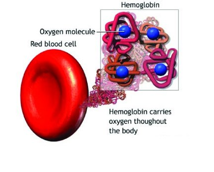
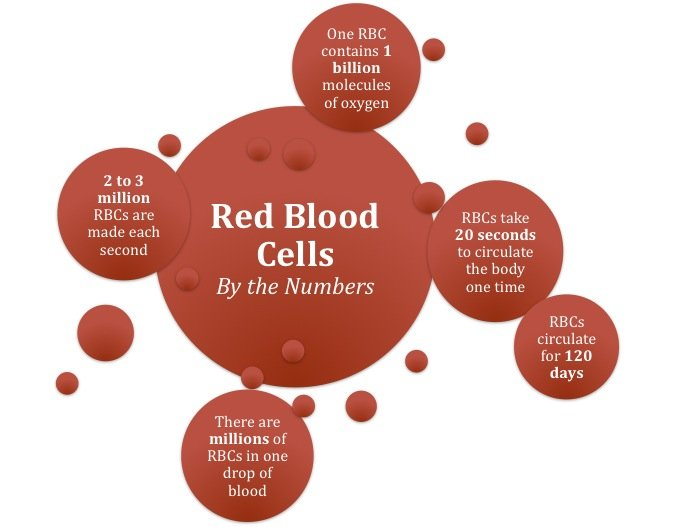
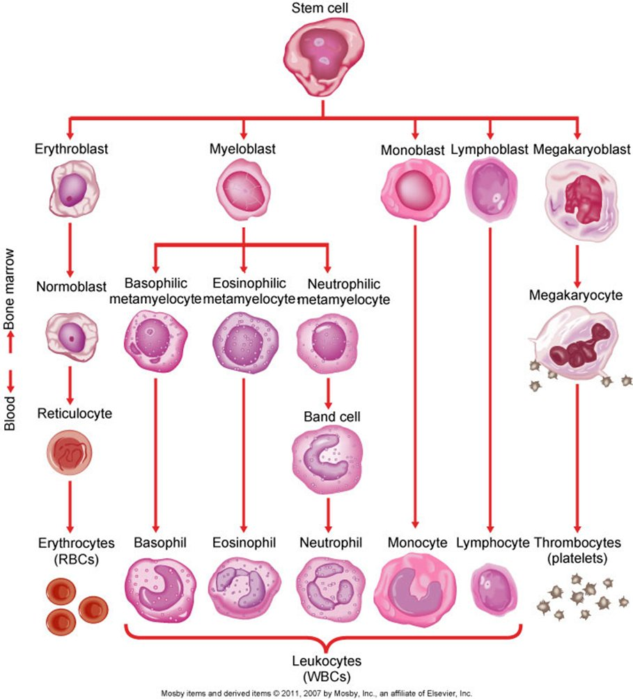
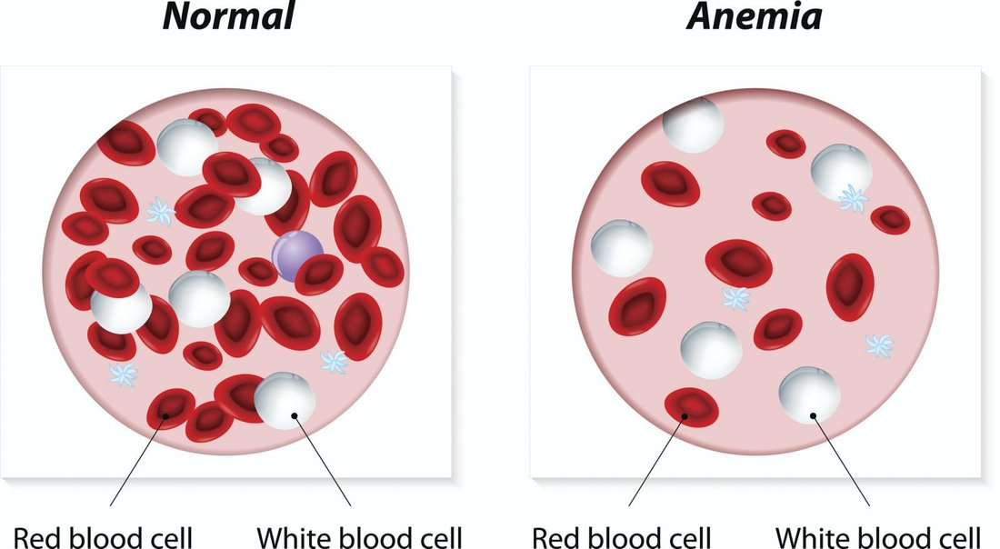
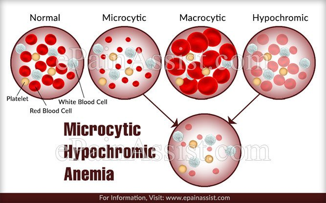
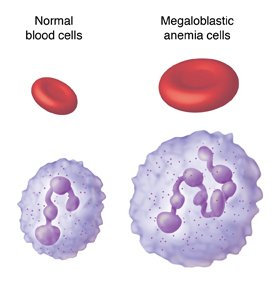
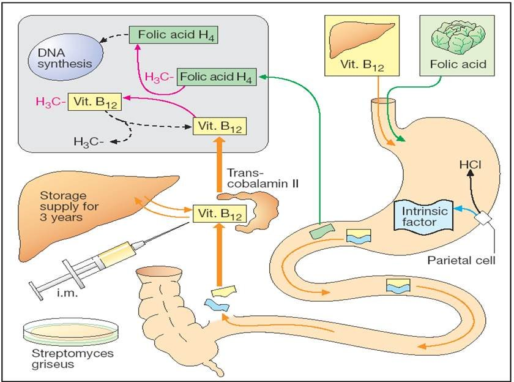
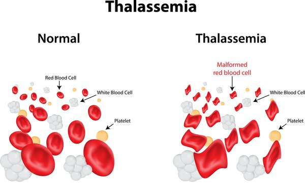

Week 2
Anemia
Anemia Basics & Classifying by Cell Morphology
What Anemia Is
- Anemia is a lack of red blood cells (RBCs) — either a reduced total number of RBCs, or a decrease in the quality/quantity of hemoglobin.
- Causes fall into a few buckets: impaired RBC production, acute or chronic blood loss, erythrocyte (RBC) destruction, or a combination.
- Hemoglobin provides the oxygen-carrying capacity of an RBC — each chain has a heme unit with iron at its center, and hemoglobin reversibly binds oxygen and CO2 for transport. Functioning hemoglobin is required for oxygen delivery to the tissues.
- The bus analogy: the red blood cell is the bus, hemoglobin are the seats, iron is what the seats are made of, and oxygen is the passengers. No iron means no seats, so oxygen can't ride along — a problem with the iron, the hemoglobin, or the RBC itself all break oxygen delivery.
- Regardless of cause, every anemia means less oxygen reaches the tissues — that's what drives the clinical manifestations.



Hemoglobin — not hematocrit — is the best indicator of anemia. Hematocrit is much more affected by a patient's fluid volume status, while hemoglobin is not.
| Cell Size / Color | What It Means |
|---|---|
| Normocytic, Normochromic | Normal-sized cells, normal hemoglobin color/function. Points to blood loss, sickle cell disease, or aplastic anemia. |
| Microcytic, Hypochromic | Small (micro), pale (hypo) cells with reduced hemoglobin. This is iron deficiency anemia — without iron, hemoglobin can't be made correctly. |
| Macrocytic | Large, abnormally shaped cells, but normal hemoglobin color. Measured by MCV (mean corpuscular volume) — increased in macrocytic anemia. Points to a B12 or folate deficiency: without either, RBC DNA synthesis is impaired, producing larger, immature (megaloblastic) cells. |


Clinical Manifestations of Anemia
| Severity | Findings |
|---|---|
| Mild | Often no symptoms at all — the body compensates well. |
| Mild to Moderate | Fatigue, weakness, mild tachycardia (the heart beats faster to move more oxygen), and possible shortness of breath. |
| Moderate to Severe | Tachycardia and tachypnea, low blood pressure, pallor, faintness, and cardiovascular symptoms with exertion. In very severe cases: bone pain (from the marrow working overtime), chest pain, heart failure, and an increased respiratory rate — all from tissue hypoxia. |
Why These Symptoms Happen
- Weakness/fatigue: muscles and metabolism aren't getting enough oxygen to work normally.
- Pallor: the body redistributes blood away from the skin toward organs that need it more (kidneys, lungs, gut, brain, heart).
- Tachycardia/palpitations: a compensatory response — the heart beats faster to try to deliver more blood to the tissues, though this doesn't fix the underlying problem for long.
- Bone pain: a chronic-anemia symptom, from the bone marrow working hard to produce more RBCs.
Severity also depends on how fast blood is lost, not just the hemoglobin level. Losing 2 liters instantly (trauma) causes severe symptoms even if the resulting hemoglobin matches a slow GI bleed that's gone unnoticed for months — the body hasn't had time to compensate.
Nutritional Deficiency Anemias — Iron, B12 & Folate
| Term | Detail |
|---|---|
| Iron Deficiency Anemia | The most common anemia in the US. Microcytic, hypochromic. Highest risk: toddlers, adolescent girls, and women of childbearing age (especially pregnancy and menstruation). Causes: decreased dietary intake, impaired absorption, increased demand, or excessive loss (GI bleeding, menstruation). |
| Iron Deficiency — Specific Findings | Glossitis (smooth, sore tongue), koilonychia (spoon nails), and pica (craving non-food items — ice chips, hard candy, or in extreme cases dirt or paper). Iron deficiency in childhood can cause cognitive deficiencies if nutrition isn't corrected. |
| B12 Deficiency Anemia | Macrocytic/megaloblastic — pale, large RBCs with impaired DNA synthesis. Most common cause: atrophic gastritis (often autoimmune), which destroys the stomach's parietal cells and stops production of intrinsic factor, which is required to absorb B12. Also called pernicious anemia. Most common in the elderly, and in those with Crohn's disease, celiac disease, or other small-intestine conditions. |
| B12 Deficiency — Specific Findings | Neurologic manifestations on top of the usual anemia symptoms — neuropathy and ataxia (gait/balance problems). Neurologic symptoms are the key differentiator that points specifically to B12 over other deficiencies. Develops slowly, so anemia can be quite severe by the time it's caught. |
| Folate (B9) Deficiency Anemia | Also macrocytic/megaloblastic — folate is needed for RBC DNA production just like B12. Most common in pregnancy (needs increase greatly) and in malnourished populations, including alcoholism/liver disease (folate is stored in the liver). Unlike B12, this is usually a problem of decreased intake, not impaired absorption — folate doesn't need intrinsic factor. Low folate in pregnancy raises the risk of low birth weight and neural tube defects. |
Folic acid can correct the anemia of a B12 deficiency without fixing the underlying B12 problem — masking it while the neurologic damage keeps progressing. Whenever folic acid is given, confirm the patient's B12 status is also adequate.


Anemia of Chronic Kidney Disease & Aplastic Anemia
| Term | Detail |
|---|---|
| Anemia of Chronic Kidney Disease | The kidneys produce erythropoietin, which signals the bone marrow to make RBCs. Failing kidneys can't release enough erythropoietin, so RBC production drops — a chronic anemia that worsens as kidney function worsens. No anemia-specific symptoms beyond the general signs of kidney failure. |
| Aplastic Anemia | A rare but dangerous primary bone marrow failure ("hematopoietic failure") — the prefix "a-" means "all." Most commonly autoimmune (the bone marrow's stem cells are attacked); can also be congenital. Causes pancytopenia — a lack of all three cell lines: RBCs (erythrocytes), WBCs (leukocytes), and platelets. |
| Aplastic Anemia — Causes | Idiopathic; high-dose toxic exposures (chemotherapy, radiation, benzene, insecticides); bone marrow cancer; or an autoimmune reaction triggered by an infection like viral hepatitis or mononucleosis. |
| Aplastic Anemia — Why It's Dangerous | Beyond the usual anemia symptoms, low WBCs mean a high infection risk, and low platelets mean a high bleeding risk — all three problems at once. |
| Aplastic Anemia — Treatment | Whole blood transfusion (not just RBCs — replaces RBCs, WBCs, and platelets together), bone marrow transplant, immune suppression if autoimmune, or corticosteroids. Drugs that stimulate erythropoiesis are also an option (see Pharmacology below). |
Hemolytic Anemias & Acute Blood Loss — Sickle Cell, Thalassemia & Hemorrhage
| Term | Detail |
|---|---|
| Acquired Hemolytic Anemia | Premature destruction of RBCs by an external agent — an autoimmune attack, a blood type incompatibility, a drug reaction, a hereditary condition present at birth, or a physical agent like a severe burn. Immune complexes form and destroy RBCs that shouldn't be attacked. |
| Hemolytic Anemia — Findings | Low hemoglobin with an increased reticulocyte count (immature RBCs — the bone marrow is releasing them before they're fully mature to try to keep up). Mild jaundice and hemoglobin in the urine, from the byproducts of broken-down RBCs. |
| Sickle Cell Disease | An autosomal recessive genetic disorder, most common in the Black/African American population (especially those of Sub-Saharan African descent) — about 7–13%. Abnormal hemoglobin S distorts RBCs into a sickle shape; these cells carry oxygen poorly, die faster than normal, easily clog blood vessels, and break apart, disrupting blood flow. |
| Sickle Cell — Findings | Usual anemia symptoms plus swelling of the hands and feet (from occluded vessels) and fever, especially during a crisis. |
| Sickle Cell — Treatment | Oxygen, hydration, and pain management are the priorities, plus infection prevention (infection can trigger a crisis). Hydroxyurea increases the presence of fetal (non-sickle) hemoglobin. Blood transfusions treat the anemia. Sickle cell is one of the first conditions being actively treated with gene therapy (CRISPR). |
| Thalassemia | An autosomal recessive genetic condition — patients lack the proteins that build hemoglobin (missing alpha or beta globin), producing microcytic, hypochromic RBCs. Beta thalassemia traces to Greek, Italian, or Jewish ancestry; alpha thalassemia traces to Asian ancestry (Chinese, Vietnamese, Cambodian). Severe cases can cause death in childhood from heart failure; with treatment, life expectancy is around 40, while moderate cases may live into their 30s with treatment. |
| Thalassemia — Findings & Treatment | Delayed growth, fatigue, dyspnea, swollen spleen/liver, bone deformities, and jaundice (from the shortened lifespan of these misshapen cells). Treated with regular blood transfusions, and possibly bone marrow transplant or splenectomy (the spleen accumulates the abnormal, destroyed cells). |
| Acute Blood Loss Anemia | From hemorrhage — trauma, or an internal bleed. Manifestations depend on the speed of blood loss: a fast, gross bleed causes severe symptoms quickly (the body has no time to compensate), while a slow, occult bleed (like a GI or retroperitoneal bleed) can stay largely asymptomatic even at rest. |

Anemia Pharmacology — Iron, B12 & Folate Replacement
| Term | Detail |
|---|---|
| Ferrous Sulfate (PO) | Oral iron supplement — drug matrix medication. Treats/prevents iron deficiency anemia. Only about 20% of ferrous sulfate is elemental iron by weight, so the dose looks larger than the actual iron delivered. Best absorbed on an empty stomach, but often taken with food (especially early in treatment) to ease GI upset, or at bedtime to reduce daytime GI side effects. |
| Ferrous Sulfate — Teaching | Take with vitamin C (helps absorption) — never with antacids or calcium (decreases absorption). Expect dark green/black stool — this is a normal, expected finding, not a sign of GI bleeding. Liquid forms can stain teeth (give through a straw) and cause a metallic taste. Do not crush/chew coated tablets. Overdose is very toxic, especially in children — a common cause of pediatric poisoning, since the tablets can look like candy; can cause liver failure. |
| Iron Dextran (IV/IM) | IV/parenteral iron supplement — drug matrix medication, for patients with more severe deficiency or who can't tolerate oral iron. Given IM using the Z-track method (can stain skin). Not given at home. |
| Deferoxamine | The chelating agent used to treat iron toxicity/overdose — binds iron into an insoluble complex that's excreted in the stool. |
| Cyanocobalamin (B12) | B12 replacement. Given PO, subQ, IM, or intranasal — never IV. High-dose oral therapy is now known to work as well as injections for most patients, though injections are still used, especially when a stomach-absorption problem (atrophic gastritis, prior gastric surgery/bariatric surgery) is the cause. Injectable dosing: IM weekly until levels normalize, then monthly. |
| Folic Acid | Folate replacement — prescription strength 1–5 mg, or at least 400 mcg/day over the counter. Well tolerated, with essentially no significant side effects. Routinely given in pregnancy via prenatal vitamins. |
Anemia Pharmacology — Erythropoiesis-Stimulating Agents (ESAs)
| Term | Detail |
|---|---|
| Epoetin Alfa (Epogen) | An erythropoiesis-stimulating agent (ESA) — stimulates the bone marrow to produce RBCs, raising hemoglobin and reticulocyte count. Used primarily for anemia of chronic kidney disease. Given IV or subQ. Requires adequate iron levels and working bone marrow to be effective — it can't fix an iron deficiency or a bone marrow problem on its own. Hemoglobin typically starts rising within about two weeks; monitored weekly, with a therapeutic goal of about 11 g/dL. |
| Darbepoetin Alfa | A longer-acting ESA, also given IV. |
| ESA Precautions | Contraindicated in uncontrolled hypertension. Do not give if it has been shaken or frozen; protect from light; do not dilute or mix with other medications. |
Self-Test Flashcards
Click a card to flip it and check your answer.